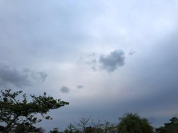
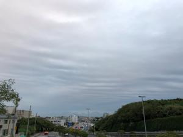
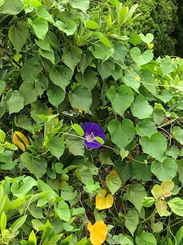

うるがいの話 ある日
最新: factfulnessうるがいとは 前提知識です
カニの画像をクリックすると『うるがいの話』サイトを表示します|
|
【うるがいの話】 うるがい(ｳﾙｶﾞｲ urugai)とは、『もずくがに』の名前でとても大きくなります。 |
|---|---|
|
|
【Got cat カミマヤーの話】 たながー（ﾀﾅｶﾞｰtanagaa）とは手長えびのことで、何種類かあり大きいのは車 エビぐらいになります。 |

|
【ぶながぁの話】 ぶながー(bunagaa)とは、赤い髪の毛、赤い身体、そして身長は１ｍ２０ｃｍ ぐらい、川の蟹を食べているの目撃された。場所は沖縄県国頭郡大宜味村のと ある村僕の隣近所に住んでいる爺さんから、聞いた話です。 |
|
|
【ギーマの話】 ギーマ(giima)とは、山原の里山に咲くスズランに似た、 花を付けます。実は食べられます、 気が付くと口の周りが紫になっています。 |
2021年10月23日 (土）factfulness
16:20
  
ファクトフルネス：事実に基づいて世界の現状を正しく見ること、コドモに頼
まれ、今年の２月に図書館の予約（たしか６０人以上の待ち）した本である。
月曜日に図書館から借りて、昨日コドモに渡した。ついでなので読んでみみた
電気は、村の公民館のところに発電機があり、そこから配電していた。時々故
障で電気が止まることがあった、大人の人達が発電機のモーターを回すために
皆で綱を引いていた。諸学校に上がる前だと思うが、たきぎで炊事をしていた
電気釜は、小学校になってから。洗濯機、冷蔵庫、自動車も。実家にクラーが
入ったのは、私が社会人になってかなり経った頃で、水洗トイレは、平成５年
頃実家を整理するまで、結局実現しなかった。作家さんは、日本版が２０１９
年に出版する前の２０１７年に、すい臓がんで亡くっていたのには少し驚く。
事実に基づいて世界の現状を正しく見ていないか、良く分かった。インパクト
のある本である。コドモが重たそうな本と言っていたが、まきでご飯を炊いて
いた時代を経験しているオヤジと、本から得られる感じは違うだろう。「産業
まつり」が今日から開催しているが、今年も奥武山ではない。奥武山になった
ら行きたい。